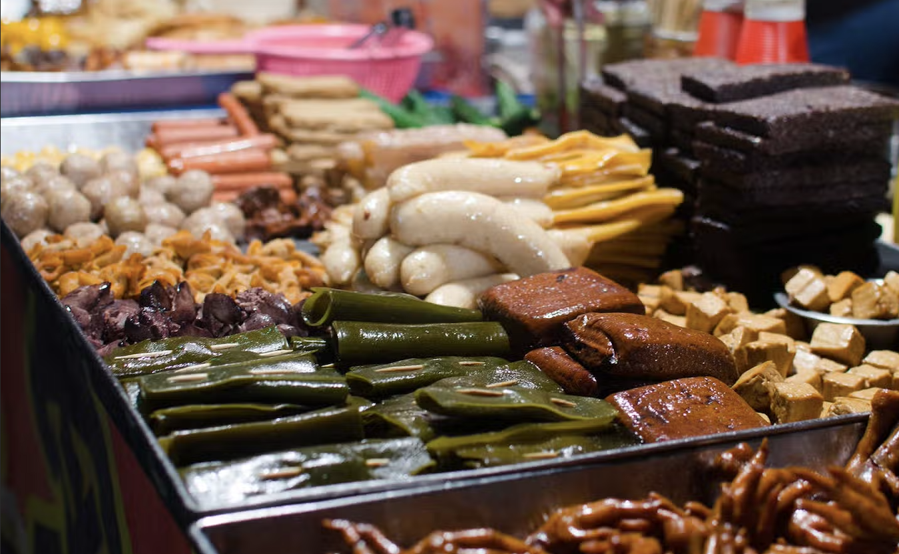
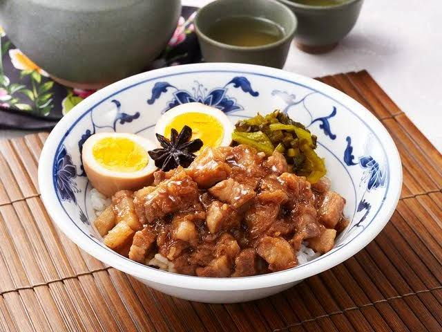
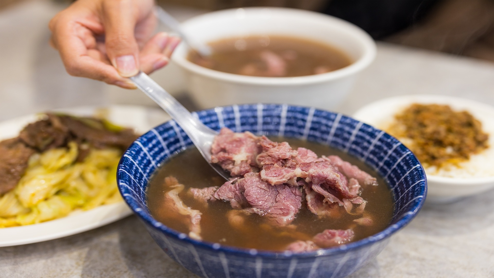
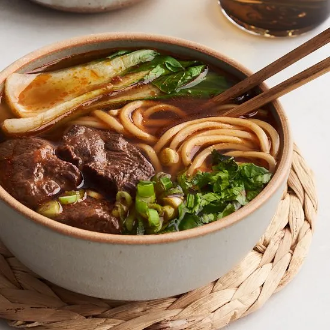
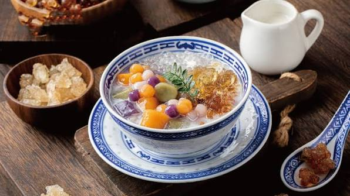
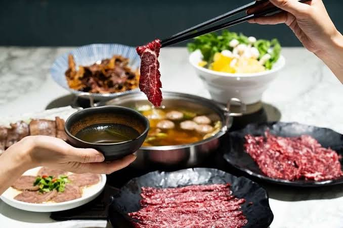
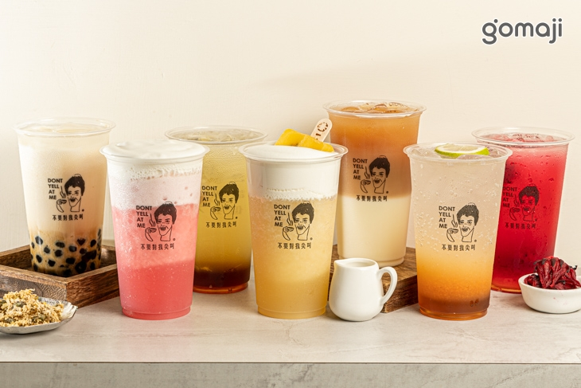

Welcome to Taste of Taiwan
Discover the authentic flavours of Taiwan. From traditional street food to delicious desserts, explore the island's unique food culture.
Discover the Flavours of Taiwan



More Taiwanese Food to Explore

Braised Pork Rice
A popular Taiwanese comfort food featuring tender braised pork served over steamed rice.
More Details
Braised Pork Rice, also known as Lu Rou Fan, is one of Taiwan's most beloved comfort foods. Pork is slowly simmered in soy sauce, sugar, and aromatic spices until tender. This affordable dish can be found in night markets and traditional restaurants throughout Taiwan.

Tainan Beef Soup
A famous specialty from Tainan featuring fresh beef slices served in a hot, flavourful broth.
More Details
Tainan Beef Soup is one of the city's most iconic local dishes. Unlike many other beef soups, it uses thinly sliced fresh beef that is gently cooked by pouring hot broth over it. Tainan is especially famous for this dish because of its fresh beef supply and long-standing food culture. Locals often enjoy it for breakfast with white rice and ginger dipping sauce.

Beef Noodle Soup
A hearty Taiwanese dish combining tender beef, chewy noodles, and a rich aromatic broth.
More Details
Taiwanese Beef Noodle Soup is a favourite meal across the island. The beef is slowly cooked until tender, while the broth is flavoured with soy sauce, ginger, star anise, and other spices. Two popular variations are red-braised beef noodles, known for their rich flavour, and clear beef noodles, which have a lighter broth.

Taro Ball Dessert
A popular Taiwanese dessert featuring chewy taro and sweet potato balls with sweet toppings.
More Details
Taro balls, known as Yu Yuan (芋圓), are famous for their soft and chewy texture. They can be added to many different Taiwanese desserts, including shaved ice, sweet soups, grass jelly, tofu pudding, and red bean desserts. They can be enjoyed hot or cold, making them popular in every season. Customers can mix different toppings to create their own dessert.

Taiwanese Hot Pot
A popular dining experience where fresh ingredients are cooked in simmering broth.
More Details
Hot pot is an important part of Taiwan's dining culture and is especially popular for gatherings with friends and family. Diners can choose from soup bases such as spicy mala, milk broth, and traditional herbal soup. Ingredients commonly include thinly sliced beef, seafood, vegetables, mushrooms, and tofu. Many restaurants offer individual pots, allowing everyone to choose their favourite flavours.

Taiwanese Bubble Tea
Refreshing hand-shaken drinks featuring milk tea, fruit tea, and customizable toppings.
More Details
Hand-shaken drinks are a major part of everyday life in Taiwan. Customers can customize their drinks with different sugar levels, ice levels, and toppings. According to Taiwan's Ministry of Economic Affairs, Taiwan had approximately 28,788 beverage shops in September 2025, including 16,113 hand-shaken drink shops. The overall beverage-shop industry generated more than NT$130 billion in revenue in 2024, highlighting the importance of Taiwan's beverage culture and market.